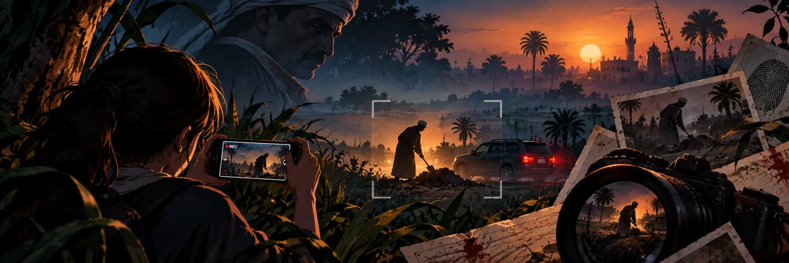
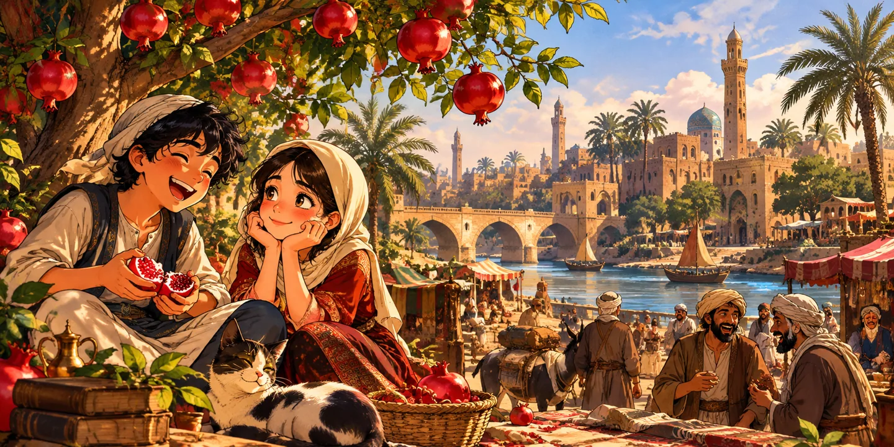

خيال علمي
رحلة غامضة تتقاطع فيها أسرار الكون مع أسئلة الوجود، حين يصبح الصمت أكثر إثارة من أي إجابة.
خيال علمي
بين الخيال والغموض وضحكات البيوت المصرية… لكل حكاية عالمها، ولكل عالم باب ينتظر أن تفتحه.
تصفّح الروايات ←رحلة غامضة تتقاطع فيها أسرار الكون مع أسئلة الوجود، حين يصبح الصمت أكثر إثارة من أي إجابة.

كل صورة تحكي جزءًا من الحقيقة، لكن بعض الأسرار تظل خارج إطار العدسة.
غلطة بسيطة عند باب شقة تفتح أبوابًا لمواقف مصرية مضحكة ومفاجآت غير متوقعة.
حكايات مصرية تتشابك فيها الأحلام والقرارات والضحكات مع تقلبات الأيام.

حكاية تبدأ ببراءة الطفولة وتكبر مع أصحابها، فيما تظل بعض الوعود أقوى من مرور الزمن.